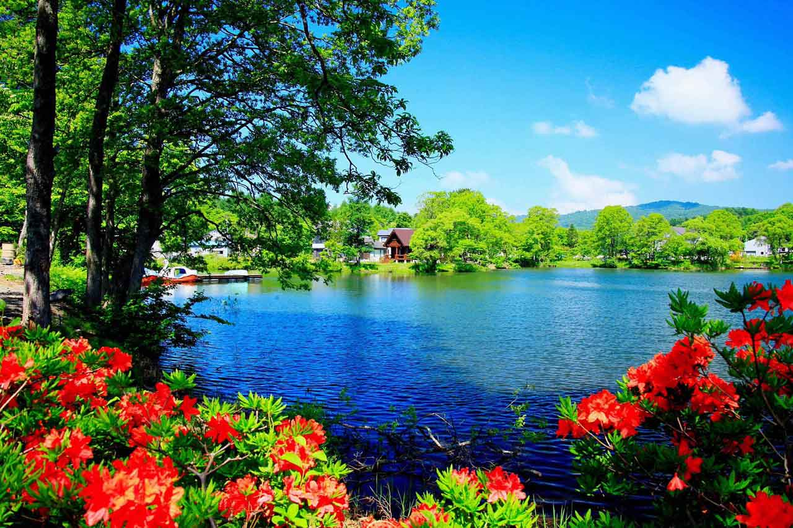

Se trata del entorno que condiciona la forma de vida de la sociedad y que incluye valores naturales, sociales y culturales que existen en un lugar y momento determinado
Representacion de la naturaleza
Estos libros hablan acerca de el medio ambiente.
Libro: la sexta extinción, Elizabeth kocbert
Libro: salvemos nuestro planeta, Adame Romero
Libro: La venganza de la tierra, James Lovelock
Lo bueno de la naturaleza
La naturaleza es la que nos brinda todo lo que necesitamos para vivir. Nos da comida, agua, oxígeno, los recursos necesarios para construir nuestras viviendas, entre muchas otras cosas.La naturaleza es también el espacio donde no sólo nos desarrollamos nosotros los humanos, sino también todo tipo de animales y plantas.
Problemas ambiantales
El medio ambien nos brinda lo siguiente, por tal razon hay que cuidarlo
A Contaminación la definicion de algunos concepto que son muy relevantes.
- Energia:
- Capacidad que tiene la materia de producir trabajo en forma de movimiento, luz, calor, etc.
- Contaminacion:
- La contaminación ambiental o polución es la introducción de sustancias u otros elementos físicos en un medio, que provocan que este sea inseguro o no apto para su uso.